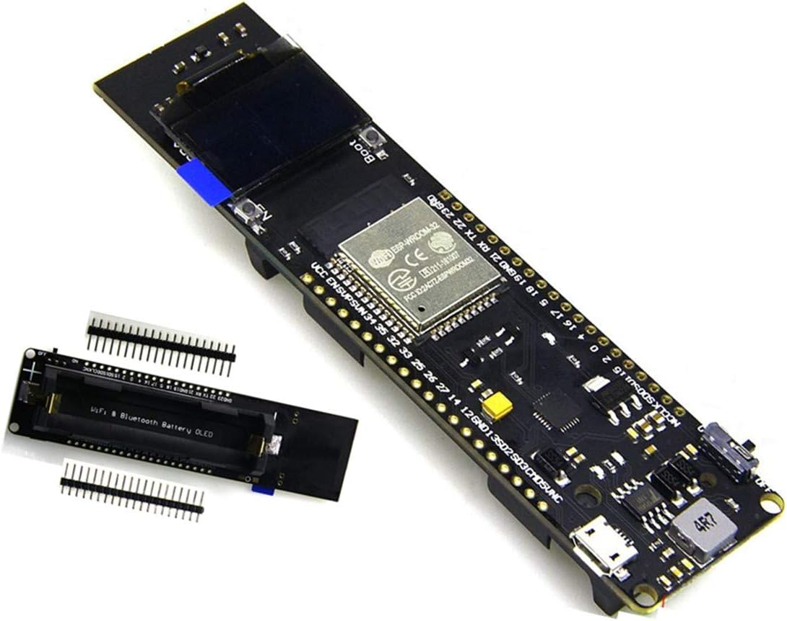
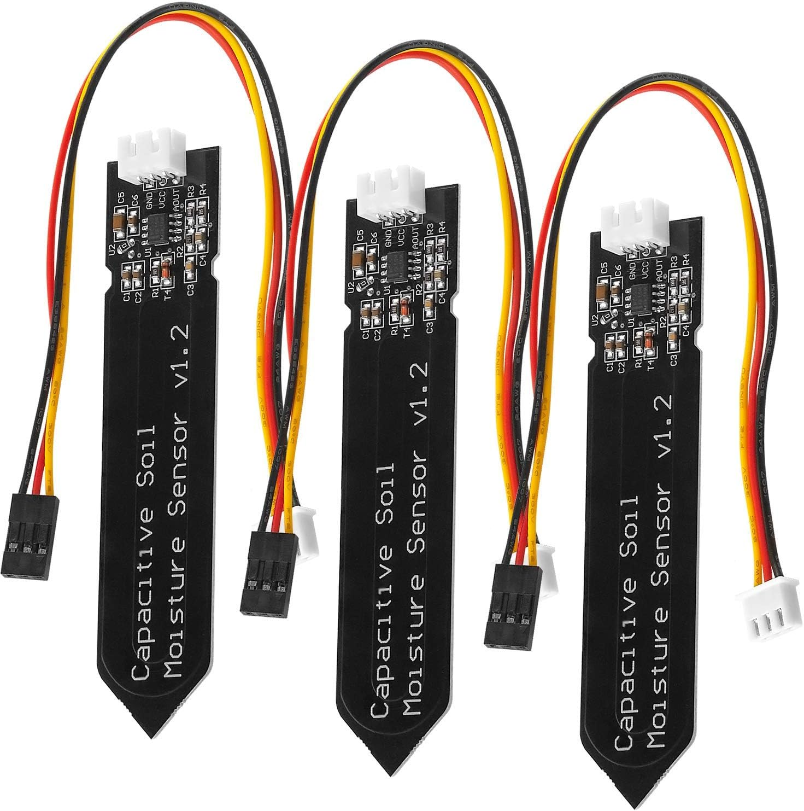
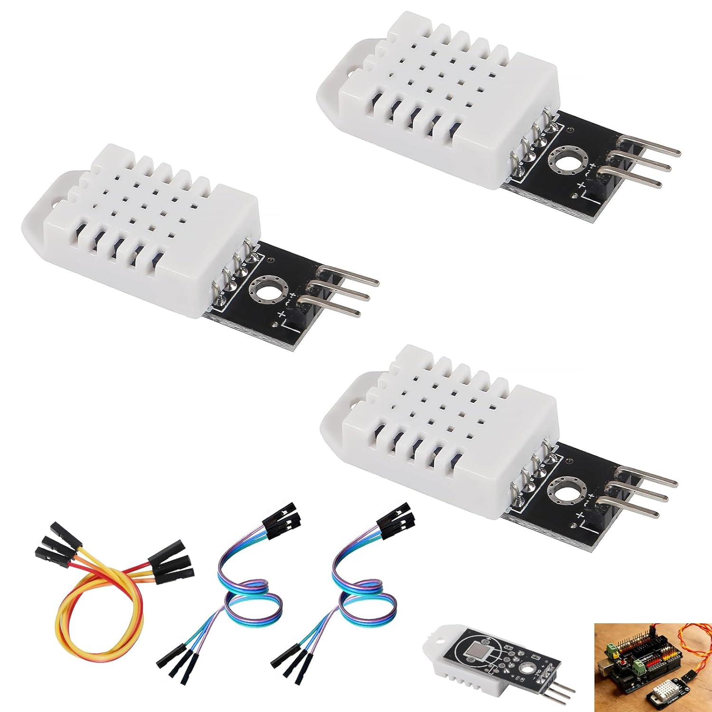
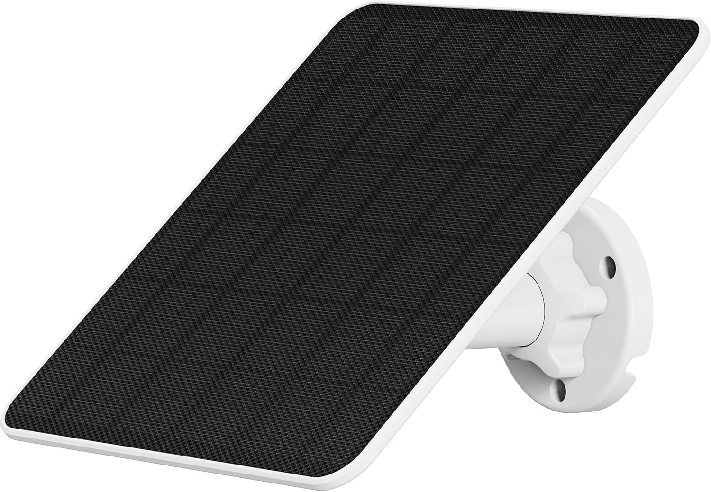
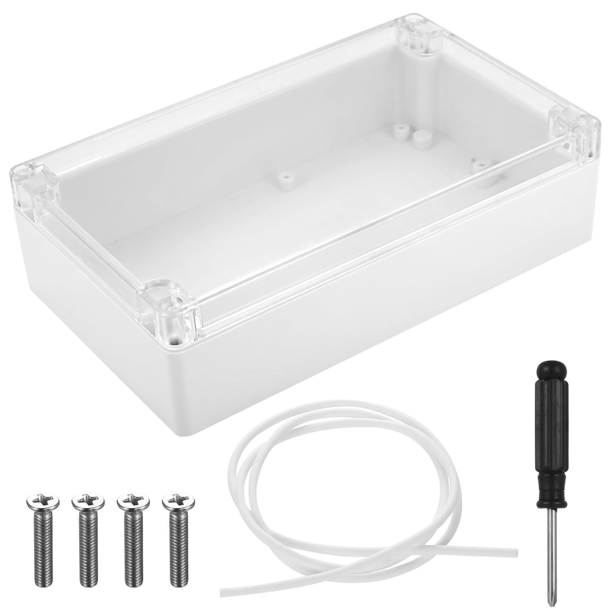
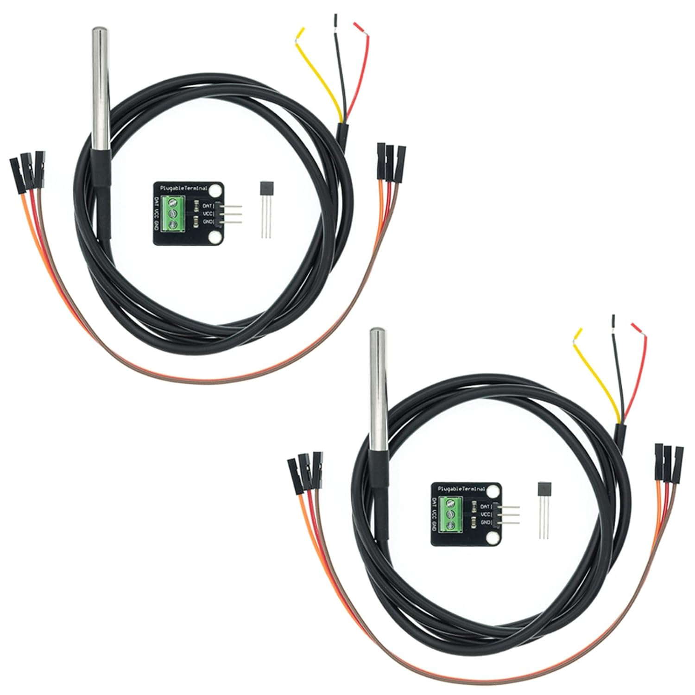
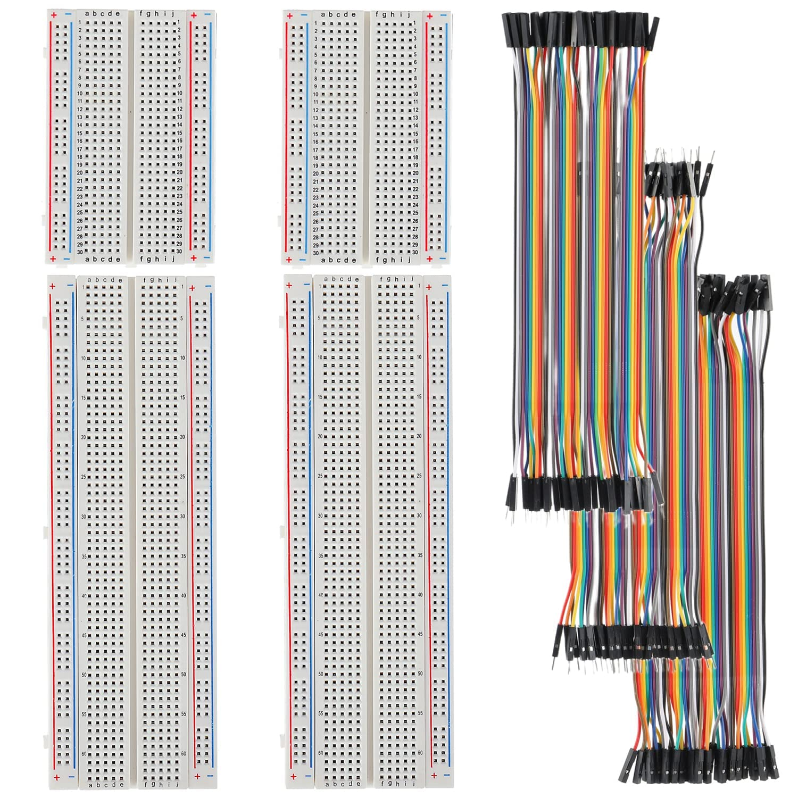
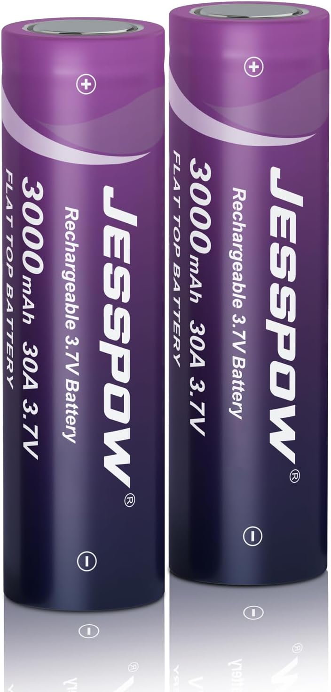
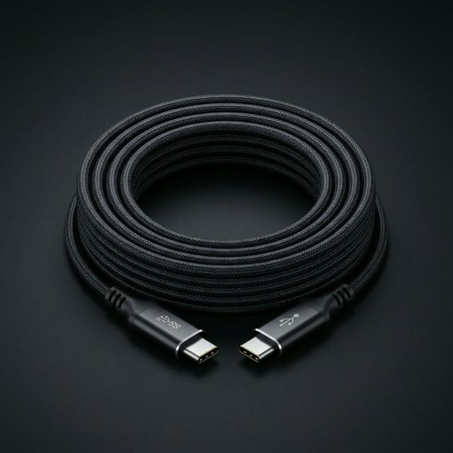

Potager Connecté
Bienvenue dans l'aventure ! Ce guide t'accompagnera pas à pas pour construire ta station météo intelligente. Prends ton temps, un café, et c'est parti !
$ install gardening-os v1.0.4C'est une blague de geek, Papa ! Pas besoin de taper ça. 😉
📦 Hardware Components
// Les objets suivants doivent être présents à la racine de votre bureau avant d'initier le montage.

Le Cerveau (MCU)
- type: "ESP32-WROOM-32"
- screen: "OLED 0.96 inch"
- bluetooth: true

Fourche Humidité
- protocol: "Analog/Digital"
- coating: "Anti-corrosion"

Capteur Air (DHT22)
- accuracy: "High Precision"
- measures: ["Temp", "Hum"]

Panneau Solaire
- output: "6W Peak"
- port: "USB Type-C"

Boîtier Étanche
- protection: "IP65 Waterproof"
- material: "ABS Plastic"

Sonde Temp Terre
- material: "Inox 304"
- cable: "1 meter"

Plaque & Fils
- grid: "830 points"
- cables: "Dupont Kit"

Grosse Pile Luxe
- capacity: "3000 mAh"
- voltage: "3.7V Li-ion"
🛠️ Le Puzzle sur le bureau
⚠️ RÈGLE D'OR : Ne branche Surtout PAS la batterie ni le câble USB tant que le monsieur sur le dessin n'a pas dit que c'était fini !
📦 Inventaire des pièces
Vide ton carton et pose ces éléments sur ton bureau :
[Plaque]
[Cerveau]
[Capteur A]
[Capteur B]
[Capteur C]
- Prends la [Plaque] blanche et pose-la bien à plat devant toi.
- Prends le [Cerveau] (carte noire). Regarde en dessous : il y a des petites pointes métalliques.
- Aligne ces pointes pour que la carte soit posée pile au centre de la plaque blanche, à cheval sur le petit fossé central.
- Appuie fermement (mais doucement) avec tes deux pouces pour enfoncer la carte dans les trous de la plaque.
- Prends le sachet de fils de couleur. Ils sont tous collés ensemble en un grand ruban plat multicolore.
- Détache-les ! Tire dessus pour en séparer un ROUGE et un BLEU (ou noir).
- Le bon embout : Il te faut des fils avec une petite pointe en métal qui dépasse à chaque extrémité (mâle-mâle).
On va envoyer le courant de la carte noire vers les grandes lignes sur les bords de la plaque.
- Fil ROUGE : Trouve l'inscription VCC sur la carte noire. Plante une pointe du fil rouge sur la même rangée horizontale, et l'autre pointe sur n'importe quel trou de la longue ligne ROUGE (+) du bord.
- Fil BLEU : Trouve l'inscription GND sur la carte noire. Plante une pointe du fil bleu sur la même rangée, et l'autre pointe sur la longue ligne BLEUE (-) du bord.
Relie la sonde à son adaptateur avant de la brancher sur la plaque.
- Prends le petit carré noir avec le bloc vert (l'adaptateur).
- Dévisse légèrement les 3 petites vis sur le dessus du bloc vert.
- Insère les 3 fils nus de la Sonde Inox
dans les trous du bloc vert dans cet ordre
:
- Fil JAUNE ➔ DAT (Data)
- Fil ROUGE ➔ VCC (+)
- Fil NOIR ➔ GND (-)
- Revisse fermement et utilise 3 câbles (Femelle-Mâle) pour relier l'adaptateur à la plaque.
C'est le moment de relier nos trois espions à la carte noire. Chaque capteur a besoin de courant pour fonctionner et d'un tuyau pour envoyer ses données.
☁️ Action 4 : Le Capteur d'Air (Température & Humidité)
- Fil ROUGE : Branche le VCC sur n'importe quel trou de la longue ligne ROUGE (+) sur le bord de la plaque.
- Fil BLEU : Branche le GND sur n'importe quel trou de la longue ligne BLEUE (-) du bord.
- Fil JAUNE : Branche le DATA sur la rangée de la carte noire où tu vois l'inscription "14" (ou P14).
🌡️ Action 5 : La Sonde de Terre (Le tube Inox)
(Utilise les 3 fils qui sortent de l'adaptateur noir que tu as préparé juste avant)
- Fil ROUGE : Branche le VCC sur la ligne ROUGE (+) du bord.
- Fil NOIR : Branche le GND sur la ligne BLEUE (-) du bord.
- Fil JAUNE : Branche le DAT (Data) sur la rangée de la carte noire marquée "4" (ou P4).
💧 Action 6 : L'Humidité du Sol (La fourche noire)
- Fil ROUGE : Branche le VCC sur la ligne ROUGE (+) du bord.
- Fil BLEU : Branche le GND sur la ligne BLEUE (-) du bord.
- Fil VIOLET : Branche le AOUT sur la rangée marquée "34" (ou P34) sur la carte noire.
✅ FIN DE L'ÉTAPE 1 ! Vérifie que tous tes fils rouges sont sur la ligne (+) et les bleus sur la ligne (-). C'est le cas ? Tu as gagné le droit de brancher le câble USB !
💻 L'Ordinateur (La Magie)
⚠️ RÈGLE D'OR : L'ordinateur va parfois afficher des lignes de texte orange ou rouge pendant qu'il travaille. Pas de panique, c'est normal, il ne va pas exploser ! Laisse-le finir.
📦 Inventaire des pièces
- [Le Puzzle] : Le montage que tu viens de terminer avec succès à l'Étape 1.
- [Le Câble] : Un câble USB adapté à ta carte noire (Micro-USB ou USB-C).
- [L'Ordi] : Ton ordinateur allumé avec Arduino IDE.

- Prends [Le Câble] USB.
- Branche le petit bout dans la prise de la carte noire [Cerveau].
- Branche le gros bout dans un port USB de ton [Ordi].
- Bip ! Une petite lumière devrait s'allumer sur la carte noire. C'est en vie !
Dans Arduino IDE, va dans Outils > Gérer les bibliothèques et installe :
DHT sensor library(par Adafruit)OneWire(par Paul Stoffregen)DallasTemperature(par Miles Burton)
Efface tout et colle ce code pour vérifier que tout fonctionne :
#include <DHT.h>
#include <OneWire.h>
#include <DallasTemperature.h>
DHT capteurAir(14, DHT22);
OneWire filSondeTerre(4);
DallasTemperature sondeTerre(&filSondeTerre);
void setup() {
Serial.begin(115200);
capteurAir.begin();
sondeTerre.begin();
Serial.println("Bonjour ! La station meteo demarre...");
}
void loop() {
int humiditeTerre = analogRead(34);
sondeTerre.requestTemperatures();
float temperatureTerre = sondeTerre.getTempCByIndex(0);
float temperatureAir = capteurAir.readTemperature();
Serial.println("--- NOUVELLE MESURE ---");
Serial.print("Terre (Humidite brute) : "); Serial.println(humiditeTerre);
Serial.print("Terre (Temperature) : "); Serial.print(temperatureTerre); Serial.println(" C");
Serial.print("Air (Temperature) : "); Serial.print(temperatureAir); Serial.println(" C");
delay(5000);
}Il faut dire à l'ordinateur à qui il doit envoyer ce texte.
- Va dans le menu Outils > Carte. Choisis ESP32 Dev Module.
- Va dans le menu Outils > Port. Clique sur le port qui s'affiche (souvent "COM3" ou "USB Serial").
- Clique sur le bouton rond avec une Flèche vers la droite (➔) (Téléverser).
- ⏳ PATIENTE. Attends de lire le message "Téléversement terminé" en bas.
- Clique sur l'icône Loupe (Moniteur Série) en haut à droite.
- Vérifie que le menu en bas à droite est sur 115200 baud.
- Regarde l'écran : La carte t'affiche la température en direct !
📡 Le Wi-Fi (Le téléphone)
📦 Inventaire pour cette phase
- [Le Puzzle] : Ton circuit programmé et branché.
- [Smartphone] : Ton téléphone pour tester l'affichage mobile.
- [Wi-Fi] : Tes identifiants (Nom & Mot de passe).
Pour voir les données sur ton téléphone, on va transformer ta carte en un mini-site web accessible depuis le Wi-Fi de la maison.
1. Sur ton ordinateur (logiciel Arduino), efface le code précédent.
2. Copie-colle le nouveau code ci-dessous.
3. ⚠️ L'ÉTAPE CRUCIALE : Tout en haut du code, remplace "NOM_DE_TA_BOX"
et "MOT_DE_PASSE_BOX" par le vrai nom et le mot de passe de ton Wi-Fi. (Garde bien les
guillemets autour !).
#include <WiFi.h>
#include <WebServer.h>
#include <DHT.h>
#include <OneWire.h>
#include <DallasTemperature.h>
// --- 📡 TES IDENTIFIANTS WI-FI (À MODIFIER !) ---
const char* ssid = "NOM_DE_TA_BOX";
const char* password = "MOT_DE_PASSE_BOX";
// --- 🔌 DÉCLARATION DES CAPTEURS ---
DHT capteurAir(14, DHT22); // Le capteur blanc sur le trou 14
OneWire filSondeTerre(4); // La sonde en métal sur le trou 4
DallasTemperature sondeTerre(&filSondeTerre);
WebServer serveur(80);
void setup() {
Serial.begin(115200);
capteurAir.begin();
sondeTerre.begin();
// 1. Connexion au Wi-Fi de la maison
Serial.println("\n🌱 Allumage du système...");
Serial.print("Connexion au Wi-Fi ");
WiFi.begin(ssid, password);
while (WiFi.status() != WL_CONNECTED) {
delay(500);
Serial.print(".");
}
// 2. Affichage de l'adresse magique sur l'ordinateur
Serial.println("");
Serial.println("✅ Wi-Fi Connecté !");
Serial.print("📱 Tape cette adresse dans ton navigateur : ");
Serial.println(WiFi.localIP());
// 3. Création du Mini-Site Web (Le Tableau de bord)
serveur.on("/", []() {
// --- LECTURE DES 4 VALEURS ---
int humiditeTerre = analogRead(34); // 1. Humidité du sol
sondeTerre.requestTemperatures();
float tempTerre = sondeTerre.getTempCByIndex(0); // 2. Température du sol
float tempAir = capteurAir.readTemperature(); // 3. Température de l'air
float humiditeAir = capteurAir.readHumidity(); // 4. Humidité de l'air
// --- FABRICATION DE LA PAGE WEB (Avec un peu de design CSS) ---
String pageWeb = "<!DOCTYPE html><html><head><meta charset=\"UTF-8\">";
pageWeb += "<meta name=\"viewport\" content=\"width=device-width, initial-scale=1.0\">";
pageWeb += "<title>Potager OS v1.0</title>";
// Un peu de style pour faire joli sur le téléphone
pageWeb += "<style>";
pageWeb += "body{font-family:'Segoe UI',Tahoma,Geneva,Verdana,sans-serif; text-align:center; ";
pageWeb += "background-color:#e8f5e9; color:#2e7d32; margin-top:30px;} ";
pageWeb += ".carte{background:white; padding:20px; border-radius:15px; ";
pageWeb += "box-shadow:0 4px 8px rgba(0,0,0,0.1); display:inline-block; ";
pageWeb += "margin:15px; width:280px; text-align:left;} ";
pageWeb += "h1{color:#1b5e20;} h2{border-bottom:2px solid #a5d6a7; ";
pageWeb += "padding-bottom:5px; margin-top:0;} ";
pageWeb += "</style>";
pageWeb += "</head><body>";
pageWeb += "<h1>🍅 Potager OS v1.0 ☀️</h1>";
// Bloc 1 : La Terre
pageWeb += "<div class=\"carte\"><h2>🌱 Dans la Terre</h2>";
pageWeb += "<p>💧 Humidité (brute) : <b>" + String(humiditeTerre) + "</b></p>";
pageWeb += "<p>🌡️ Température : <b>" + String(tempTerre) + " °C</b></p></div>";
// Bloc 2 : L'Air
pageWeb += "<div class=\"carte\"><h2>☁️ Dans l'Air</h2>";
pageWeb += "<p>🌡️ Température : <b>" + String(tempAir) + " °C</b></p>";
pageWeb += "<p>💧 Humidité : <b>" + String(humiditeAir) + " %</b></p></div>";
pageWeb += "</body></html>";
// On envoie la page au téléphone
serveur.send(200, "text/html", pageWeb);
});
// On lance le serveur web
serveur.begin();
}
void loop() {
// La carte écoute en permanence si un téléphone demande à voir la page
serveur.handleClient();
}1. Clique sur le bouton Téléverser (la flèche vers la droite) pour envoyer ce nouveau code dans la carte.
2. Ouvre la Loupe (Moniteur Série) en haut à droite.
3. Attends quelques secondes. L'ordinateur va afficher un message du type :
✅ Connecté ! Tape cette adresse dans ton téléphone : 192.168.1.XX
4. Prends ton smartphone (assure-toi qu'il est connecté au même Wi-Fi que la maison).
5. Ouvre ton navigateur Internet (Safari, Chrome...) et tape exactement les 4 nombres séparés par des points dans la barre d'adresse tout en haut.
6. Magie ! Une page blanche apparaît avec le titre "Potager OS v1.0" et tes relevés en direct !
🏡 La Maison Étanche et le Jardin
⚠️ RÈGLE D'OR : C'est le moment de faire très attention au sens de la pile (le + et le -). Si on la met à l'envers, la carte noire fera de la fumée, et ce n'est pas bon signe !
📦 Inventaire pour cette étape
- [Le Puzzle] : Ton circuit qui fonctionne sur le bureau.
- [La Boîte] : Le grand boîtier de 20 cm avec son couvercle transparent.
- [Les Embouts] : Les presse-étoupes blancs.
- [L'Énergie] : La grosse pile JESSPOW et le panneau solaire NIVIAN.
- [Les Outils] : Une perceuse et un tournevis.
On va préparer la boîte pour laisser entrer les fils, mais pas la pluie.
- Prends [La Boîte] et choisis le côté qui pointera vers le sol une fois installée dehors.
- Perce 3 ou 4 trous uniquement sur ce côté du dessous (jamais sur le dessus, sinon l'eau va s'infiltrer).
- Visse tes [Embouts] blancs dans les trous. Dévisse le petit chapeau de chaque embout et garde-le sous la main.
Il faut rentrer le circuit dans la boîte.
- Débranche le câble USB de l'ordinateur.
- Débranche uniquement les fils des capteurs qui vont aller dehors : le tube en métal (Sonde Inox) et la fourche noire (Humidité). Laisse le capteur blanc (Air) branché, il reste à l'intérieur de la boîte.
- Prends ta plaque blanche, décolle l'autocollant en dessous, et colle-la bien au centre, au fond de la boîte.
- LE PIÈGE : Prends les fils de la Sonde Inox et de la fourche noire. Passe-les à l'intérieur des petits chapeaux des embouts blancs, puis glisse-les à travers les trous de la boîte (de l'extérieur vers l'intérieur).
- Fais pareil avec le câble USB de ton panneau solaire : passe-le de l'extérieur vers l'intérieur.
- Maintenant que les fils sont dans la boîte, tu peux les rebrancher sur la plaque blanche exactement comme à l'Étape 1.
- Tire doucement sur les fils depuis l'extérieur pour ne pas avoir un gros paquet de nouilles à l'intérieur de la boîte.
- Visse et serre très fort les chapeaux des embouts blancs. Le caoutchouc va écraser les fils : l'eau ne pourra plus jamais passer !
- Prends la grosse pile JESSPOW. Regarde au dos de la carte noire : il y a un support avec un (+) et un (-) gravés dans le plastique.
- Insère la pile dans le bon sens. L'écran devrait s'allumer tout de suite !
- Prends le bout du câble du panneau solaire (qui est maintenant dans la boîte) et branche-le sur la prise USB de la carte noire.
- Pose le couvercle transparent sur la boîte, et serre fermement les 4 vis aux coins.
- Fixer le boîtier : Accroche ta boîte sur un piquet en bois ou sur le bord de ton bac à légumes.
- Le Soleil : Fixe le panneau solaire juste au-dessus. Règle-le pour qu'il regarde plein Sud, incliné vers le ciel à environ 30 ou 35 degrés.
- Plonger la Sonde Inox : Enfonce le tube en métal profondément dans la terre (environ 10 à 15 cm).
- Planter la Fourche Noire : Plante le capteur d'humidité (fourche noire) dans la terre. **ATTENTION :** N'enterre que la grande partie noire. La petite partie en haut (où les fils sont soudés) n'aime pas l'eau et doit rester à l'air libre !
- Bravo ! Tu es maintenant un Hacker Agricole ! 🍅